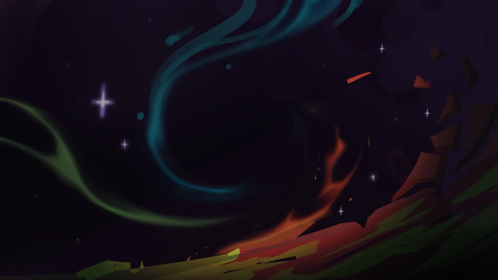
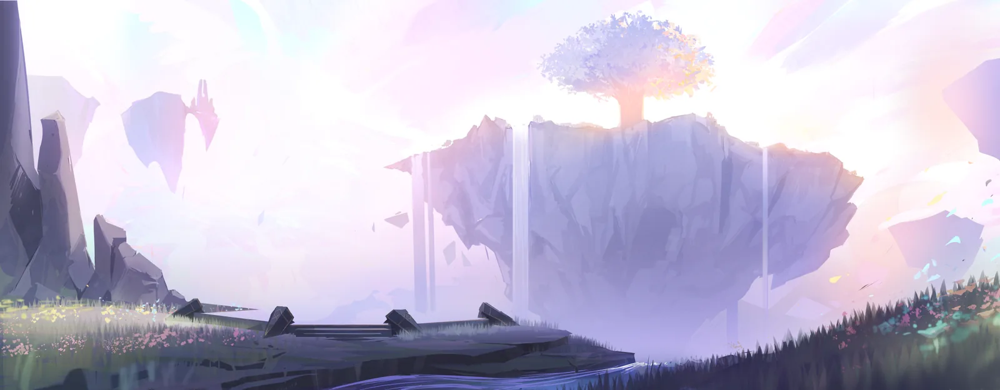
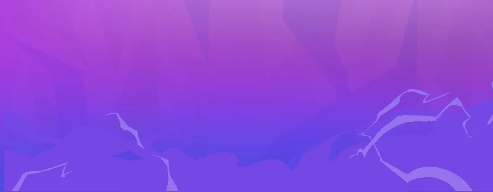
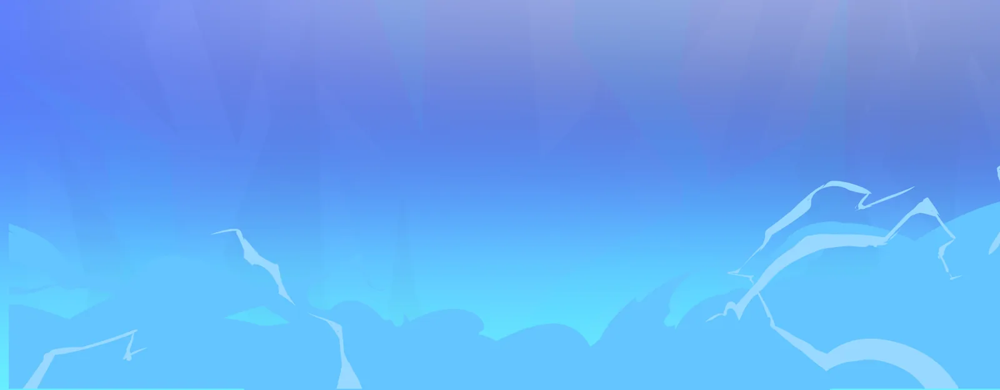

AUBE PRIMORDIALE
-99999 à -20000 Durée : 79999 ansNaissance d'une conscience
Des profondeurs du néant infini qu’est le Chaos élémentaire jaillit une palette de couleurs innombrables. Cette énergie primordiale se déploie comme un tourbillon vivant, un enchevêtrement de forces indistinctes, indissernable, privées de sens, de logique et de direction. D’immenses forces cosmiques se croisent, se mêlent et se heurtent sans objectif. Elles se superposent dans un mouvement perpétuel, générant des interactions imprévisibles, sans qu’aucune intelligence ne semble les guider.
Après un temps indescriptible, cette agitation aveugle engendre une structure singulière. Une convergence improbable des flux élémentaires produit une étincelle inattendue, une conscience capable de se distinguer de la masse informe. Pour la première fois, un mélange élémentaire se dote d’une volonté de vivre, découvrant l’univers avec émerveillement, comme un nouveau-né face au monde. Vivante d’une manière encore inconnue, elle ressent le frisson d’être, l’envie d’explorer et de comprendre. Ses premiers instants sont faits de curiosité et de contemplation, absorbée par les motifs, les couleurs et fluctuations chaotiques
Toutefois, l’éternité devient une torture lorsque le spectacle demeure immuable. Peu à peu, l’émerveillement devient lassitude. La solitude s’installe et la conscience cherche à comprendre l’origine du phénomène qui lui a donné naissance. Elle commence par expérimenter avec ses propres pouvoirs, sondant ses capacités et testant ses limites. Elle tente de reproduire l’étincelle originelle, d’engendrer une autre présence semblable à la sienne. Toutes ses tentatives demeurent vaines. Face à ce silence absolu, elle prend une décision dangereuse : Toucher à la nature des flux élémentaires qui jusqu'alors n'ont jamais été influencés.
La Déesse Mère et sa création
Cherchant à s’extirper de la solitude, la première de toutes les consciences entreprend d’agir sur les fondamentaux universels qu’elle n’avait jusqu’alors fait qu’observer. Cette longue contemplation lui a permis d’en comprendre les liaisons et les combinaisons les plus sûres. Grâce à cet apprentissage, progressivement, tentative après tentative, entre échecs et ajustements, elle agit avec mesure et hésitation, cherchant à reproduire l’équilibre par l’instabilité des éléments, à l’image de ce qui avait permis sa propre émergence. C’est ainsi qu’elle parvient à faire naître de nouvelles entités, chacune s’éveillant avec une perception unique de sa propre existence et cherchant instinctivement à entrer en contact avec les autres. Leur langage se limite à des sensations brutes et des pensées fragmentées. Pour améliorer leurs échanges, elles modifient progressivement leurs formes, cherchant à rendre leurs intentions plus lisibles. Malgré cela, leurs divergences s’accentuent et les échanges dégénèrent en confrontations.
Les désaccords se multiplient jusqu’à former une cacophonie rappelant le Chaos originel. Prenant compte de cette impasse, la première de toutes propose propose d'établir un cadre commun, un espace stabilisé destiné à accueillir de nouvelles existences à même de mettre tout le monde d'accord. De cette volonté naît un monde, une planète encore vierge, conçue comme une toile modulable dont se dégage une structure riche et complexe. Où l’instabilité cède face à une structure naissante. Cet acte fondateur vaudra à l'initiatrice le nom d'Aeltheria la créatrice.
Façonnage d'Elther
Le monde nouvellement créé reçoit quant à lui le nom d’Elther. Il ne naît pas achevé, il est patiemment façonné, chaque détail est ajusté avec précision maintenant un équilibre aussi fragile qu’essentiel. Comparable à une structure instable sur le point de s’effondrer d'un souffle, Elther repose sur une délicate harmonie entre les éléments. Certaines entités s’occupent d’enrichir son contenu, d’autres veillent à préserver la stabilité. Elles seront plus tard les Divinités que nous connaissons, œuvrant en commun pendant de longues années, chacune artisan du monde à son image, sous l'attention et le regard attentif d'Aeltheria.
Pour façonner le monde, des outils titanesques ont été créés : on les appelle aujourd'hui, Calamités. Dépourvues de conscience et de volonté, elles agissent comme le prolongement du corps des Divinités qui les contrôles. Par leur action, des masses colossales ont été déplacées, des reliefs se sont élevés, des océans ont été creusés et des profondeurs se sont ouvertes. Leur intervention a pu être précise ou brutale, ordonnée ou chaotique, selon les intentions de ceux qui les ont dirigées.
Peu à peu, Elther devient prête à accueillir de nouvelles formes de vies, plus fragiles, plus petites, plus pures. Le monde se prépare pour ce qui doit encore naître.
L’Éveil des Veilleurs
Autour d’Elther, un voile mystique se déploie, fragile et lumineux, une création délibérée qui enveloppe la planète et l'isole du Chaos élémentaire. La voute Céleste se divise naturellement en deux moitiés de trois Royaumes. Ces domaines se déplacent de façon cyclique autour de la Surface, suspendus par les nuages. La première des deux moitiés baigne la Surface de sa lumière du jour et la seconde la plonge dans l’ombre de la nuit. Cette dualité crée le cycle jour nuit, principe vital qui sculpte subtilement les reliefs, bâtis les montagnes et érode la pierre, construit un futur lieu habitable pour nos ancêtres.
Au sein des Royaumes Célestes, au cœur même des nuages, les premiers Éternels prennent forme. Leur essence incorporelle est le reflet de leur créateur. Ils sont affiliés à un ou plusieurs éléments, leur corps est en premier lieu immatériel, sans forme physique précise, ce qui leur permet la métamorphose. Évoluant dans des domaines suspendus, légèrement brumeux, leurs instincts les poussent à agir sous l'influence des doctrines de leur Divinité. Ils s’installent, ancrant leurs lieux de vie parmi les cumulonimbus, aménageant ces espaces et organisant leurs premières communautés, développant cultures et traditions. La société des Éternels se civilise peu à peu dans cet espace aérien, et l'Ordre Éternel s'apprête à accueillir les vies futures.
Certaines Divinités choisissent un élu comme leur Avatar, responsable de la transmission de leur volonté et un des régents de l'Ordre. Au prix de son libre arbitre, l'acolyte applique les principes de son grand souverain Divin. Les autres habitants des cieux, quant à eux, poursuivent leurs activités, développent leur société et observent la Surface d'en haut.
Grace aux conditions réunies à la Surface, de nouvelles formes de vie s'apprêtent à naitre, les Eveillés.
Le Pacte des Cieux
Un climat propice à la vie des Éveillés anime le monde d'Elther de nouvelles forces. Océans et forêts s'étendent et se remplissent de plantes et de créatures capables de ressentir, de réagir et d’interagir avec leur environnement. La planète est encore jeune, et tout se construit à la vitesse des engrenages du temps.
Alors que la création se déploie à l'image d'une fleur qui vient d’éclore, les Divinités contemplent et apprécient leur œuvre commune. Afin d'en préserver la beauté et d’éviter tout effet de causalité lié à leur puissance, elles s'accordent solennellement autour d'un pacte : jamais elles n’interviendront de façon directe, sans Avatar, sur Elther au risque de la détruire. Le Pacte des Cieux ainsi scellé garantit les meilleures conditions de jeu pour chaque Divinité.
Les Éternels prennent leur place, tels des pions sur l'échiquier. Ils deviennent les instruments du Pacte des Cieux, des pantins articulés au travers desquels les Divinités influencent le destin d’Elther. Ces acolytes surveillent la Surface et font appliquer leur foi sous l’autorité inquisitrice de l'Ordre, alors même que la vie continue de se déployer.
L’Aube Primordiale touche à sa fin. Elther est achevée, prête à évoluer sous le regard discret de ses concepteurs.

ÂGE DES DIVINITÉS
-20000 à 0 Durée : 20000 ansLes Guerres Divines
Le Pacte des Cieux interdit aux Dieux d'agir sur la Surface, ils ne manquent pas de continuer à guider les peuples. Malheureusement, la foi se transforme peu à peu en lois rigides et en barrières inquisitrices responsables de conflit entre les nations. Partout, les civilisations s'éveillent, mais au lieu de s'unir, elles se replient sur leurs propres dogmes.
Dans les plaines comme dans les montagnes, les conflits de religion éclatent. Ce ne sont plus que des guerres, de plus en plus brutales. Les armées s'affrontent pour prouver la supériorité de leur dieu, ignorant des ravages sur le monde. La violence rompt l'harmonie élémentaire : des séismes déchirent le sol et des tempêtes imprévisibles dévastent les cités. Le monde bascule vers le chaos.
Face à cette folie, trois lignées légendaires refusent de prendre les armes auprès d'un culte et s'interposent entre les hérauts célestes. Les Oniyx, de petits êtres félins à l'esprit vif et aux yeux perçants, utilisent leur génie pour fusionner science et magie, bâtissant des remparts technologiques là où d'autres sont aveuglés par leurs idoles. À leurs côtés s'élèvent les Pixarch, créatures de lumière aux oreilles pointues et aux ailes d'insecte majestueuses, leur vol diurne semble porter l'espoir du vivant. Enfin, les Dhöggeïr, d'immenses reptiles ailés à quatre pattes dont le langage runique résonne comme un tonnerre ancien.
Ils ne cherchent pas à régner, mais à protéger. Sentinelles neutres et déterminées, ces trois peuples consacrent leur existence à brider la démesure céleste. S'imposant comme les seuls arbitres capables de stopper les massacres fanatiques, offrant à Elther les fondements nécessaires à sa survie.
Les Jeux Divins
Après des siècles ensanglantés, Elther change de visage. Les tribus éparpillées se regroupent et forgent des nations fondées sur des idéaux partagés. Pour garantir la pérennité de cette paix fragile, dix États souverains se dessinent sur le continent unique. Parmi eux, trois bastions s'imposent par leur influence : Oniyxia, la cité des neiges où le génie félin repousse les limites de la science. Vaeloria, le royaume sylvain où les Pixarch veillent sur les secrets de la vie. Nordvinter, la terre de glace et de mystères où les Dhöggeïr s'imposent comme des arbitres souverains. Ainsi que les autres nations d'Éveillés complètent cette mosaïque de cultures unies par un pacte de non-agression.
Pour concrétiser cette harmonie et éviter que les armes ne s'entrechoque à nouveau, une régence se forme. Six Rois, un pour chaque élément, sont choisis de par leur sagesse et leur force, avec pour mission sacrée de maintenir l'ordre et de veiller au respect de l'équilibre fragile de la Surface. Cette responsabilité solennelle, portée par chaque souverain, est transmise fidèlement à son héritier, assurant que la volonté de paix ancestrale perdure à travers les âges. C'est sous leur égide que les conflits se règlent désormais par les épreuves des Jeux Divins, déplaçant la guerre en un lieu de respect mutuel.
Le Bâton de Gabriel
Au milieu de cette ère paisible organisée, un projet secret unit deux esprits visionnaires : Gabriel, maître Pixarch dont la magie de nature est sans égale, et Lumisaros, éminent ingénieur Oniyx capable révolutionner la sciences d'Elther. Ensemble, ils construisent un instrument, offrant a certains peuples les moyens de s'épanouir par eux-mêmes : le Bâton de Gabriel.
Cet artefact unique n'est pas une arme, mais un catalyseur d'évolution. Il offre à n’importe quel être vivant des traits humanoïdes, un corps capable de manipuler des outils et, surtout, une conscience plus vaste permettant la réflexion complexe. Les premières créatures à s'éveiller sous son influence sont les Nymphes, nées du monde des insectes, puis plus tard les Anthropomorphes, issus du règne animal. En effet, Gabriel et Lumisaros refusent d'utiliser leur invention sur les animaux sauvages, ils emporteront avec eux les raisons de ce choix comme un secret sacré.
Les Nymphes deviennent ainsi la première espèce consciente née de cette prouesse partagée. Pour exprimer leur gratitude envers leurs créateurs, elles se consacrent avec ferveur au maintien de l'équilibre élémentaire de leurs territoires sylvains. Mais derrière leur dévotion se cache un esprit vif et espiègle, portant l'héritage d'une nature qui n'oublie jamais de s'amuser.
L’Arbre des Mystères
La montée en puissance des peuples de la Surface finit par déclencher la colère des Royaumes Célestes. Pour les Éternels, voir des Éveillés manipulant ainsi les forces élémentaires est une insulte qu'ils ne peuvent tolérer. Proche d'un point de non-retour, Gabriel et Lumisaros se retirent au cœur de la cité Pixarch. Dans le plus grand secret, ils unissent leurs talents afin d'ériger un colosse végétal et technologique : l'Arbre des Mystères.
Ce géant aux feuilles d'émeraude ne tarde pas à révéler sa nature. Il agit comme un filtre, purificateur de zones "élémactives" frappant ici et la le continent, des émanations laissées par les combats divins. Autour de lui, un havre silencieux s'établit, offrant un refuge inespéré à ceux que la magie a brisé. Bien que ses créateurs le présentent humblement comme un simple outil de purification, ils savent qu'il est bien plus : un phare destiné à guider les peuples vers une prospérité nouvelle, loin de l'ombre des cieux.
Pourtant, la protection de l'Arbre ne suffit pas à calmer l'orage. Les Éternels, divisés entre ceux qui veulent punir la Surface et ceux qui veulent la préserver, intensifient leurs assauts. Pour Pyrosolain, fier chef des Oniyx, et Aurelia, souveraine majestueuse des Pixarch, la technologie pacifiste de Gabriel et Lumisaros atteint ses limites. Alors qu'une résistance s'organise, la Mère Dhöggeïr se presse d'informer Aurelia de son départ par delà les cieux.
Aurore d’Aurelia
Face à la fureur des Royaumes Célestes, Aurelia, prend une décision qui marquera Elther à jamais. Elle appelle les siens à se joindre à elle pour un ultime assaut contre les forces Éternels. C'est une mission sans retour, un sacrifice nécessaire pour briser les chaînes célestes, que la majorité des Pixarch embrasse avec une résolution héroïque. Certains choisissent de rester sur la Surface pour préserver la mémoire de leur peuple. Par obligation, ces individus renoncent à leurs ailes afin qu'Aurelia ne puisse pas drainer leurs pouvoirs durant le sacrifice. Ils se mutilent et enlèvent leurs ailes et deveniennent les Sentinelles.
Pendant ce temps, Pyrosolain et ses ingénieurs Oniyx déploient leur génie technologique. Ils forgent des armes de destruction massive capables de défier la puissance des Éternels, ouvrant une brèche sanglante dans le firmament permettant à Aurelia et ses soldats de s'infiltrer dans la voûte céleste. Soudain, le ciel s'embrase d'une lueur dorée, une explosion d'énergie pure qui déchire les nuages avant de retomber en un silence de mort.
La guerre prend fin, mais la paix a un goût de cendres. Le sacrifice des Pixarch laisse un vide immense que les peuples appellent désormais « l'Aurore d'Aurelia ». On ne reverra plus leurs sourires empathiques, on n'entendra plus la mélodie de leurs rires qui apaisaient les cœurs. Si les armes se sont arreter, la méfiance envers les Éternels reste une plaie ouverte. Pyrosolain, marqué par la perte de sa plus proche alliée, refuse de désarmer. Plus que jamais, il perfectionne son arsenal, prêt à protéger la Surface si les cieux devaient à nouveau s'obscurcir de menace.
Forge de la Fusion
Au cœur de la région de Hadeir, le Mont Vulcain résonne d'un vacarme incessant. Dans la cité royale, la forge millénaire bat à un rythme effréné de jour comme de nuit. Les artisans venus des quatre coins du monde unissent leurs forces pour préparer ce qu'ils craignent tous : le retour de la guerre. Le silence de l'Équilibre est soudain rompu par l'arrivée d'un messager ailé, un Éternel porteur d'une prophétie terrifiante : le « Recommencement » est proche.
Sans plus attendre, le Roi du Feu confie à son ami et plus talentueux aviateur, Pyro, la mission de porter l'invitation aux autres souverains du continent. Les six régents se réunissent dans l'urgence autour d'un mystérieux grimoire laissé par le messager : le Codex Primordial. Malgré une méfiance partagée, la peur de voir les peuples de la Surface s'effacer tel une erreur de dessin, les pousse à la collaboration. Ils mobilisent leurs meilleurs érudits pour déchiffrer ce langage oublié dont les pages semblent insuflées d'une énergie ancienne.
Parmi tous les savants, une seule parvient à percer l'opacité du Codex : la Tisseuse du Chaos. Elle devient l'architecte en chef d'un projet titanesque révélé par le livre : la construction d'un portail dimensionnel et de sa clé. Les Oniyx jettent tout leur génie dans cet ouvrage inconnu, forgeant des structures de cristal et de métal. Mais la clé du portail est trop massive et puissante pour être portée d'une seule main. Elle est alors fragmentée en six armes runiques sacrées à l'image des rois. Chacune de ces lames, dépositaire d'un pouvoir élémentaire, est remise aux six jeunes héritiers des régents, chargés d'être les futurs porteur des sceaux du portail.
Chasse aux Oniyx
Pyrosolain le sait : après le sacrifice d'Aurelia, l'heure est venue pour lui d'exiger l'impossible aux siens. Le chantier du Portail, espoir ultime de la Surface, est une proie trop fragile face aux bataillons inquisiteurs des Éternels. Afin de protéger l'avenir, il faut une diversion, un brasier assez puissant pour détourner les regards zélés de la construction. Dans les forges Oniyx, les rires et les sourires s'estompent, laissant place au bruit des machines. Inquiet et en proie au doute, Pyrosolain s'apprête à revenir sur sa décision, toutefois Lumisaros l'arrête et souhaite lui montrer quelque chose, c'est alors que Pyrosolain se rendit compte du travail de l'ensemble des Oniyx, un effort chanté et rythmé par le choc de l'acier contre l'enclume. C'est l'hymne de la résistance qui retentit dans les usines Oniyx.
Émus par la détermination de son peuple, Pyrosolain se ressaisis, l'offensive est lancée transformant chaque usine Oniyx en un bastion de défiance. Face à la réponse céleste d'envergure, Pyrosolain ordonne à Lumisaros de s'enfuir, lui confiant par la même occasion un devoir de mémoire mais aussi le poids des secrets de Gabriel. Les yeux gorgés de larmes, Lumisaros accepte ce fardeau et disparaît dans les ombres.
Pendant dix longues années de combats incessants, le chant Oniyx résonne plus fort que les explosions. Leurs tourelles automatisées et leurs engins de guerre tiennent tête aux Éternels, luttant mètre après mètre pour offrir au monde chaque seconde de répit nécessaire. Puis, plus rien, plus de chant, des forges froides. Il ne reste plus qu'un écho mélancolique dans les montagnes et des souvenirs gravés dans la pierre d'Elther.
Sceau d’Aeltheria
Le chantier monumental touche enfin à sa fin. Sous les yeux ébahit des ouvriers s'illuminent une à une les six couleurs élémentaires du portail. C'est à ce moment, telle une lance perçant le ciel, qu'une louve gigantesque surgit, sa silhouette brumeuse occultant l'horizon. Les six jeunes héritiers, équipé de leurs armes runiques, sortent de leurs tentes afin de faire face à la bête. Le combat s'engage, rapide et féroce, chaque frappe s'insérant dans une chorégraphie millénaire que personne ne semble diriger.
À force de coordination et de courage, les héritiers parviennent à faire reculer la puissance fantastique jusqu'au centre du Portail. Mais alors que les portes se referme sur la créature, un goût amer envahit les vainqueurs. La victoire leur a semblé trop simple, presque orchestrée, comme s'ils n'étaient finalement que des pions sur un échiquier. Ils ont scellé la menace, mais un préssentiment glaçant leur souffle qu'une ère bien plus sombre se prépare.
Leur existence même bascule dans l'étrangeté : alors qu'ils retrouvent leurs lieu respectifs, les nouveaux Rois s'aperçoivent que le temps n'a plus de prise sur leur chair. Leurs armes confèrent une immortalité troublante, un don qu'ils n'auront guère le temps de savourer. Le sol se dérobe déjà, les montagnes se déchirent avec un hurlement de pierre, et le continent unique commence à se fissurer de toutes parts. Le Grand Cataclysme vient de commencer.

LA MALÉDICTION DES ROIS
0 à 700 Durée : 700 ansLe Grand Cataclysme
Les Calamités jaillissent des entrailles de la terre. En quelques jours à peine, le continent unique se fissure, se déchire, se fracasse en une mosaïque d'archipels épars. Des villes millénaires s'engloutissent, des forêts entières disparaissent dans des gouffres soudains, tandis que le ciel lui-même s'embrase, laissant pleuvoir de larges pans du continent fracturé sur les terres en dessous.
La géographie d'Elther tout entière se trouve redessinée : des pans de terres sont projetés dans toutes les directions, certains engloutis sous les flots, d'autres érigés en nouvelles chaînes de montagnes, d'autres encore suspendus entre mer et ciel. Une vaste étendue d'eau obscure envahit le centre sud du continent fracturé, mer nouvelle que les survivants baptisent la Mer Étoilée, étendue aux lueurs mystérieuses dont l'opacité ne laisse rien percevoir de ce qui sommeille en ses profondeurs.
Les Éternels, pris de cours dans leurs Royaumes Célestes, sont pour la plupart avalés et scellés par la Calamité du Cataclysme avant qu'elle ne retourne s'assoupir au centre de l'Abysse, laissant derrière elle un monde brisé. Des fléaux cauchemardesques jaillissent des failles abyssales ainsi ouvertes, et les peuples, cherchant un coupable à leur désastre, ne tardent pas à en attribuer la responsabilité aux Rois élémentaires.
Une nouvelle ère connue comme la Malédiction des Rois commence.
L'Heure des Rois
Tenus responsables d'avoir suivi aveuglément le contenu d'un Codex d'origine Céleste, les six Rois que leur arme runique a rendus immortels portent désormais, malgré eux, un titre dont l'éternité est devenue le poids. Ce que le monde croyait être un don se révèle le fardeau de témoins condamnés à réparer l'irréparable.
Chacun regagne ce qui reste de sa juridiction, découvre l'étendue des dégâts
et fait face, à sa manière, aux fléaux qui l'attendent.
Le Roi de l'Ombre quitte les terres d'Okaemi et part seul affronter les menaces de Nyevielh.
Le Roi de l'Eau reprend ses routes et marchande plus que jamais à la Surface pour porter secours aux
populations Alphilanes.
Le Roi de la Terre œuvre sans relâche à retrouver les survivants et à reconstruire son territoire.
Le Roi du Feu évacue d'urgence les abords du Mont Vulcain rongé par la corruption du volcan.
Le Roi de la Lumière, fidèle à la louve, disparaît d'Okaemi avec son peuple dans le silence absolu propre
à sa doctrine.
Le Roi de la Nature consacre tout ce qu'il possède à la recherche d'un remède contre l'épidémie de
Fanure.
Hier unis face aux divinités tyranniques, aujourd'hui séparés par le poids de leurs épreuves singulières, ils n'en resteront pas moins fidèles à jamais à leur serment et à la préservation de l'équilibre du monde.
Malédiction de l'Ombre : Un combat sans fin

Habile diplomate lucide, le Roi de l'Ombre a été le premier à mettre en garde contre un suivi trop strict des écrits célestes. Il gouverne de concert avec son épouse, la Duchesse de Nyevielh, héritière de cet ancien duché du Roi de la Lumière. Ensemble, ils ont bâti en ces terres un équilibre fondé sur le partage des pouvoirs et des ressources. Elle n'en reste pas moins la maîtresse souveraine, hiérarchiquement supérieure à son mari.
La fracture du continent unique isole violemment Nyevielh des terres luxuriantes d'Aelther, la mer Étoilée s'y déverse à flots, portant en ses eaux des Abyssaux qui envahissent sans relâche les terres autrefois prospères. Témoin de la souffrance de son peuple, le Roi fait ses adieux à sa famille et part affronter l'Abysse, seul.
Combattant inlassablement, de jour comme de nuit, il fauche des centaines de créatures cauchemardesques. Usant des pouvoirs de son arme runique, il confère aux survivants une apparence mutante, rebutante certes, mais à la constitution plus robuste face aux maladies et suffisamment étrange pour que les abyssaux les moins intelligents les ignorent.
Pour contenir la vague incessante de cauchemars vivants, le Roi invoque un puissant Maelström autour de la faille. Ce gigantesque vortex monte du fond des eaux jusqu'aux nuages des Royaumes Célestes. Un tourbillon permanent dans lequel se battent à ses côtés les Éternels rescapés du Grand Cataclysme. Prisonnier d'une lutte sans fin sur ses propres terres, même dans le monde des cauchemars durant son sommeil, il ne peut rejoindre sa famille que lors de rares et brefs instants de répit en rêve sous sa puissante et effroyable forme d'émissaire protecteur des cauchemars.
Il sait que par l'immortalité qu'est la sienne, sa famille cessera un jour de rêver.
Malédiction de l'Eau : Les Contrées de Cristal

De tout temps, les Rois de l'Eau ont été des voyageurs, marchands, navigateurs et artisans parcourant le monde entier, portant les échanges et les langues sur les côtes du continent unique. Le dernier héritier du titre, Elthérien de naissance, s'éprend de la reine Alphilane Lyranna. Il lui offre son savoir et ses capacités, développant petit à petit une relation intime avec la sirène. Cette romance, la noblesse matriarcale et conservatrice Alphilane n'a jamais pu la digérer. La doyenne Mère Alphilane, reconnaissant l'apport de cet étranger, lui octroie des traits Alphilans lui permettant de vivre sous l'eau. Sa forte personnalité et l'aide qu'il apporte au peuple marin font de lui quelqu'un de très apprécié par la classe populaire.
Dans les premières semaines qui suivent le Grand Cataclysme, le Roi de l'Eau prend la mer et cartographie la nouvelle géographie d'un monde que les Calamités ont rendu méconnaissable. Les constructions Alphilanes détruites réclament d'immenses ressources pour être relevées. Depuis la capitale, Lyranna se porte garante des efforts de son mari tandis que celui-ci marchande ses découvertes auprès des autres nations.
Des fragments du continent en lévitation au-dessus de la capitale menacent de s'y écraser à tout moment. Afin de les maintenir en suspension, les Alphilans ont besoin d'une consommation considérable d'orbes Oniyx. Le Roi mobilise son peuple, arpente des forges et pille d'anciennes usines Oniyx pour rassembler le maximum de ressources. Ses longues absences serviront certains opportunistes dans l'élaboration d'un coup d'État.
À son retour, il ne se sent plus le bienvenu dans son propre palais. Si Lyranna demeure la régente incontestable, le conseil Alphilan exige qu'elle fasse enfermer son mari. Ils choisissent plutôt de se retrouver loin des regards, dans les eaux claires de la mer Nimbée, proche de Vaeloria, là où la politique ne les atteint plus. C'est là qu'ils conçoivent en secret leur fils héritier, qu'ils verront grandir jusqu'à l'adolescence tout en maintenant chacun leurs obligations respectives, jusqu'au jour où les orbes viennent à manquer et les forcent à reprendre la route.
Sur un vaste fragment isolé du continent, la Mère Dhöggeïr les attend. Elle leur propose un flux continu d'orbes pour le peuple Alphilan en échange du sceau permanent d'Oniyxia. Le Roi proteste, convaincu qu'il est trop dangereux de négocier avec un Éternel, mais sa compagne le persuade, la doyenne Alphilane étant aussi Éternel.
Tous deux souhaitant protéger leur fils et son avenir menacé par les îles Esseulées qui survolent toujours la capitale, le contrat est ainsi scellé. Par les pouvoirs des vents de son arme runique, le Roi devient la glace permanente qui ensevelit Oniyxia sous de vastes Contrées de Cristal, emprisonnant les technologies Oniyx interdites ainsi que la Mère Dhöggeïr elle-même derrière d'épaisses couches de glace. De sa propre volonté, l'Éternel s'endort au cœur du Pic le plus haut. Lyranna, quant à elle, est métamorphosée en Dame Navire, entité mythique condamnée à naviguer sans fin, générant dans son sillage les nouveaux courants nécessaires au déplacement naturel des orbes depuis Oniyxia.
Elle laisse une tablette écrite pour son peuple : "Nous ne manquerons plus jamais d'orbes, elles viendront d'elles-mêmes en sortie du détroit d'Ohre. Les nouveaux courants sont de notre fait, ne pouvant m'arrêter de naviguer, je ne vous reverrai probablement plus, je confie l'ensemble de mes pouvoirs royaux à notre fils unique, il saura vous guider comme je l'ai toujours fait. Votre fière Reine."
Leur fils, né dans le plus grand des secrets, fait l'effet d'une bombe au sein de l'aristocratie ; mais ses traits Alphilans le rendent plus acceptable et légitime à la régence que ne l'aurait jamais été son père d'origine Eltharienne. Passant l'essentiel de son temps sur le front à enchaîner les prouesses contre les créatures de la mer Étoilée, il évoque toujours avec fierté le temps passé auprès de ses parents et le sacrifice qu'ils ont consenti pour leur nation. Des groupes s'organisent pour remonter les courants des océans à la recherche de leur reine, tandis que d'autres manigancent dans l'ombre, espérant que le prochain combat du jeune seigneur soit celui de trop.
Malédiction de la Terre : L'Extinction de Shal'Zaar

Les terres de Shal’Zaar ont de tout temps été les plus riches du continent. Son Roi, grand prêtre calme et patient, vénéré par son peuple comme un être proche du sacré, entretenait depuis des générations une relation privilégiée avec certains Éternels, à qui il transmettait et de qui il recevait des secrets que nulle autre lignée n’était autorisée à garder. Le Grand Cataclysme emporte le dernier de cette lignée, laissant à son héritier, porteur de l’arme runique de la Terre, un trône couronné dans le deuil. Malgré les exigences écrasantes d’un pays en ruines, le nouveau Roi s’efforce de maintenir le lien avec les autres souverains, saisissant chaque répit pour s’assurer que nul ne traverse seul ce que le monde devient.
Dix ans après le Grand Cataclysme, il reçoit dans son sommeil la visite du Roi de l’Ombre, dont la longue présence onirique fait naître entre eux une inquiétude partagée : la Tisseuse du Chaos, architecte du Portail et ancienne confidente de son prédécesseur, est toujours introuvable, et le Codex Primordial qu’elle détenait n’a été récupéré par personne dans le chaos qui a suivi. Le Roi de la Terre alerte aussitôt les Éternels, mais tous se taisent, sans exception. Ce mutisme anormal amplifie ses craintes, et il organise une grande chasse pour retrouver l’architecte.
La chasse n'a pas le temps de commencer. Au nord-ouest, une explosion gigantesque jaillit, rasant les cultures, pulvérisant les habitations en fine poussière, atteignant jusqu'aux confins du Sud du continent où la capitale s'effondre sous un immense tourbillon de sable aspiré par les Abysses, ouvrant un passage par lequel les créatures cauchemardesques se déversent à flots. En un instant, Shal'Zaar est effacée de la carte. Il ne reste que du sable et du vent sur de vastes surfaces désormais inhabitables. Dans l'urgence, le Roi invoque les pouvoirs de son arme runique pour protéger ce qu'il peut de son peuple. Peu survivent.
La rage au ventre, il part seul vers le foyer de l’explosion. Sur place, le sceau du Portail est forcé, la Tisseuse du Chaos gît inconsciente sur le sol et le Codex Primordial repose à ses côtés, fragmenté. Sans hésiter, il fait surgir une chaîne de montagnes autour du site pour en sceller l’accès, un lieu que le monde entier attribuera aux ravages du Grand Cataclysme et qui portera le nom de Chutes d’Ether. Le Scruteur de Sommets, Éternel avec lequel les Rois de la Terre entretenaient de longue date une relation de confiance, en prend la garde. Il récupère les fragments du Codex et en confie une partie à Vladislaus, ami sûr dont la droiture n'est plus à prouver, qui accepte sans détour, conscient de l’urgence.
De retour dans ce qui reste de Shal’Zaar, il guide en secret les survivants dispersés dans le désert, dissimulé sous d’épais tissus, silhouette que son peuple surnomme le Gardien des Dunes. Il refuse d’être reconnu, mais comprend peu à peu que l’immortalité qui est la sienne n’est peut-être pas une malédiction. Pendant des années, il affronte les Abyssaux qui infestent le sable. Chaque nuit, il adresse une prière silencieuse à Vladislaus et aux autres Rois, espérant que de leur côté, tout aille bien.
Malédiction du Feu : La Cité Infernale d'Hadeïr

Logaïr, cité ancestrale bâtie autour d’un volcan en constante activité, était depuis des siècles la fierté d’Hadeïr. Ses forges légendaires avaient permis la création des armes runiques elles-mêmes, et les artisans du monde entier s’y rendaient pour profiter de ses installations sans équivalent. Les Rois du Feu, grands combattants aimés des Dhöggeïr, transmettent à chaque génération un titre et une flamme, portant en eux une énergie héréditaire que les siècles n’ont jamais épuisée. On murmure même que la mère du dernier héritier Aidan serait une Dhöggeïr, une rumeur que le Roi du Feu n’a jamais ni confirmée ni démentie.
Après le Grand Cataclysme, les mouvements tectoniques déstabilisent le mont volcanique, mais la nation du Feu était préparée à ce genre d'extrêmes : ses technologies stabilisent rapidement le pays, et Hadeïr reprend son rôle de moteur industriel, soutenant les autres nations en reconstruction. Tout semble aller pour le mieux, et personne ne voit venir le vrai danger, un gaz d'origine abyssale remontant silencieusement des profondeurs pour contaminer les veines volcaniques.
Cette pollution élémactive sournoise, que l’on appelle aujourd’hui le Gazpoison, infecte les créatures d’affinité Feu, Dhöggeïr comme humanoïdes, les rendant agressives jusqu’à les transformer en bêtes monstrueuses dont la seule volonté est de détruire. La splendeur de Logaïr se ternit à mesure que la folie gagne ses habitants.
Le Roi agit avec pragmatisme. Il sépare sa population en deux groupes, ceux qui possèdent une affinité au Feu et ceux qui n’en ont pas, et évacue d’abord les seconds. Quant aux infectés, il leur demande de transformer la cité en forteresse dont personne ne pourrait sortir, pas même un Dhöggeïr, et ce sont les plus courageux d’entre eux qui mènent à bien cette opération suicide d’une ampleur inouïe pour sceller définitivement les dangers futurs de cette Cité Infernale. Le Roi, son fils Aidan et bon nombre de ses sujets hantent aujourd’hui ce qui reste de Logaïr et de ses forges, créatures maudites que le vieillissement ne touche plus, condamnées à errer sans fin entre ses murs.
Le nord d’Hadeïr devient un territoire inhospitalier que les expéditions répétées ne parviennent pas à libérer. Pour tenir sur le long terme, Drageïrh s’y érige, gigantesque forteresse alimentée par les turbines d’un barrage relié à Nordvinter et soutenue par les Dhöggeïr non affiliés au Feu qui refusent d’abandonner leurs terres. Le sud, épargné par la pollution et naturellement séparé par les montagnes et les savanes, se fait rebaptiser Lumethia par ses habitants.
Malédiction de la Lumière : Le Silence du Roi

La Nation de la Lumière avait été, durant tout l’Âge des Divinités, l’organisme militaire le plus redoutable d’Elther, non par le nombre de ses soldats mais par leur qualité absolue. La Meute, des guerriers d’élite dont la loyauté n’avait d’égale que leur foi en la Louve. Le titre de Roi de la Lumière ne se transmettait pas par le sang mais par le duel, accordé au meilleur combattant par le souverain lui-même, une tradition qui forgeait des champions là où d’autres nations se contentaient de former des héritiers.
Sa doctrine se résumait à une phrase gravée dans toutes les pierres de sa nation : “Si les rêves existent, ce n’est pas pour qu’ils soient vécus.” Artiste martial et suivant inconditionnel d’Aeltheria, le dernier Roi de la Lumière avait choisi d’obéir à l’appel céleste de son arme runique et d’ignorer les demandes d’aide de son ami le Roi de l’Ombre. Leur séparation fut définitive, froide et sans un mot.
Ce qui est arrivé ensuite reste l’un des mystères les plus tenaces d’Elther : le Roi et sa population quittèrent leurs terres, hormis Nyevielh que la fracture du continent avait déjà isolée. Ses vignes, ses plages, la chaîne de montagnes d’Aelther et son Mont Céleste furent laissés à l’abandon, mais jamais tout à fait seuls. Aujourd’hui, cette montagne est le terme de tout pèlerinage, un accès direct vers les Royaumes Célestes pour qui accepte d’en gravir le sommet, un chemin qui commence toujours de la même manière, par un rêve qui guide le pèlerin vers le Sage de la Pierre sacrée de Lumethia. Ceux qui refusent l’appel rapportent avoir croisé un chat étrange aux yeux d’or, mise en garde silencieuse dont l’origine reste inconnue.
À l'est d'Emeldarion, une tribu chamanique s'est installée dans le plus grand secret, et constitue à ce jour la seule piste sérieuse quant au lieu où se trouverait le Roi de la Lumière. Elle a bâti des structures monumentales aux formes canidées et, au centre de leur village, le plus haut temple jamais érigé sur Elther, visible à des kilomètres à la ronde. Pendant des générations, cette tribu a repoussé toute personne qui n'y est pas née, des statues de loup dessinant une frontière que nul n'a le droit de franchir. La foudre s'abat régulièrement sur ce territoire, et certains élus du village semblent capables de se téléporter. Seuls quelques voyageurs osent formuler l'hypothèse que le Roi de la Lumière s'est installé là, à veiller en silence sur le bon déroulement des pèlerinages.
Malédiction de la Nature : Le Sacrifice Meridien

Le royaume de Vaeloria est un havre paisible et accueillant pour qui cherche refuge dans ses vastes terres. Son souverain est le seul des six Rois à ne pas être Elthérien de naissance, un Pixarch dont la lignée régule l'élément de la Nature depuis des millénaires. Apothicaire érudit autant que gouvernant, il partage remèdes et terres avec les peuples voisins, leur offrant sans condition refuges et ressources.
Après l'Aurore d'Aurelia, une plaie profonde creuse le cœur de Vaeloria et de ses habitants. Le Roi ne donne jamais d'explication sur la disparition des Pixarch, pas plus qu'il n'explique pourquoi, depuis cet événement, il n'arbore plus ses magnifiques ailes. La vision d'entraide qui a toujours guidé Vaeloria devient plus floue, la médecine est réorientée vers la guerre, et le développement des TOX se met à ronger la société jusqu'à ses gouvernants. La nation continue par principe de recueillir et soigner les blessés du monde, mais la corruption est telle que ses terres se fragmentent, des parcelles entières passant aux mains de bandits ou de peuples rebelles.
Puis vient s'ajouter la fracture du continent unique. Le Grand Cataclysme sépare Vaeloria en deux dans un fracas de pierre et d'éléments déchaînés. La capitale Pixarch disparaît complètement dans une explosion gigantesque, de multiples morceaux du pays s'abattant sur la Surface comme une pluie de ruines. Vaeloria sud se retrouve isolée par une mer nouvelle, née du cataclysme, et les peuples de ce domaine fondent leur propre civilisation, nommant leur pays Emeldarion en hommage aux Dhöggeïrs protecteurs Emeraldoth et Aldryn.
Les survivants de la catastrophe doivent en plus affronter une épidémie qui s'étend depuis l'origine même du fléau. La Fanure. La maladie s'accroche aux cellules de ses victimes afin de corrompre leur affinité élémentaire en un mélange de Nature et d'Ombre parasite, qui transforme l'hôte en créature hostile aux traits semblables à ceux d'une plante vivante. Le Roi mobilise l'ensemble de ses ressources et connaissances pour trouver un remède. Il est lui-même affecté malgré son immortalité, et voit tomber un à un ses chercheurs, jusqu'à comprendre qu'il ne lui reste plus d'autre choix que de recourir aux pouvoirs de son arme runique, qu'il refusait jusqu'alors d'employer à cette fin.
Une nuit, un émissaire se glisse dans ses cauchemars, se présentant comme le Roi de l'Ombre. Ce dernier lui confie sa situation et celle des autres Rois, lui révélant l'origine abyssale commune aux maux qui déchirent le monde. Comprenant enfin la nature du mal, le Roi de la Nature remercie l'émissaire de son rapport et sait dès lors comment employer son arme runique pour s'occuper de la maladie.
Le lendemain, devant ses vassaux et ses sujets rassemblés sous la pluie battante, le monarque Pixarch annonce sa volonté de créer un arbre de vie gigantesque, similaire à celui que Gabriel et Lumisaros avaient perdu dans l'explosion du continent. L'arbre est annoncé comme dernier rempart contre la maladie, au coût de la vie du Roi. L'audience salue le sacrifice de son souverain avec une ferveur qu'elle n'oubliera jamais, et les fidèles vassaux acceptent de prendre la relève de la gestion de Vaeloria nord.
Dans les jours qui suivent, il disparaît symboliquement à l'aurore, sans laisser de traces. Vaeloria se rassemble autour du nouvel arbre qui a pris racine et poussé en une simple journée. Les vassaux se réunissent en grand conseil décisionnaire pour tenter de gérer les nombreuses crises internes qui assaillent ce qui reste de leur nation.
Le feuillage brillant aspire les surplus d'éléments Ombre et Nature pour les synthétiser et les restituer en un air pur et chaleureux. L'arbre est nommé Meridia, en hommage au nom du Roi de la Nature. Autour de lui s'élève une nouvelle capitale portant ce même nom. Les Vaeloriens le guettent dès lors, espérant qu'un jour son feuillage frémisse pour annoncer le retour de leur seigneur.
Puis, un jour, l'aimant à maux qu'est l'arbre finit par atteindre les Abysses par ses racines. La corruption des profondeurs commence à troubler le Meridia. Des études d'urgence sont lancées. Des expéditions s'enfoncent dans un immense labyrinthe naturel, un donjon que les Aventuriers baptisent les Racines. La structure sur plusieurs étages est en perpétuel mouvement, sauf dans ce que l'on appelle les zones de vie, des lieux où des installations de repos et de ravitaillement sont aménagées lorsqu'un étage a été complété et assaini par les Aventuriers.
La guilde des Aventuriers, dirigée d'une main de maître par la grande Ignéa, se donne pour mission d'empêcher le débordement des créatures abyssales, de débloquer de nouvelles zones de vie et de chercher un moyen de soigner l'arbre sacré. Elle travaille en partenariat avec les pèlerins, dont certains doivent traverser les Racines avant de reprendre leur voyage. Si l'arbre meurt, le reste du monde court à sa perte, et Vaeloria recrute sans relâche des gens capables d'en affronter les profondeurs.
À Vaeloria et plus particulièrement dans sa capitale, il est très mal vu de parler de la Malédiction des Rois. Pour ce peuple, le terme Sacrifice demeure le seul mot recevable pour évoquer ces temps de trouble.
Le Rééquilibrage
Les plaies cicatrisent lentement. Les peuples reconstruisent, forgent de nouveaux liens, réinventent leurs sociétés sur les décombres de l'ancien monde. Les générations se succèdent, s'adaptent, et ce que leurs ancêtres vivaient comme un cataclysme devient pour leurs enfants une simple géographie, une géographie peuplée de ruines mystérieuses et de légendes à moitié oubliées.
Mais si le temps apaise, il ne pardonne pas entièrement. Malgré tous leurs sacrifices, les Rois portent dans l'imaginaire collectif la responsabilité de la catastrophe. Leur immortalité, preuve irréfutable de leur lien avec les Éternels, fait d'eux des symboles de colère, de tristesse et de peur. Le titre de certains Rois élémentaires reste vacant, personne n'y aspirant. Les sociétés se reconstruisent autour d'autres structures, d'autres croyances, d'autres pouvoirs. Les noms des six souverains glissent peu à peu du registre de l'histoire vers celui de la légende.
Dans ce monde fragmenté, chaque nation trace sa propre voie. Lumethia et Nordvinter s'allient pour récupérer Hadeïr aux griffes du fléau de la corruption du feu. Nyevielh reste isolée et inhospitalière, avec des rumeurs telles que nul n'en revient jamais. Emeldarion prospère, ses terres vastes et riches permettant un commerce central international. Shal'Zaar accueille encore les pèlerins au nord de ses dunes, bien qu'elle continue de repousser les Abyssaux du sud. Les Alphilans s'isolent dans les profondeurs de la mer intérieure, ne communiquant qu'à contrecœur si nécessaire avec Vaeloria. Vaeloria, encore attachée à la diplomatie et à l'histoire, s'efforce de maintenir des relations cordiales entre toutes les nations.
L'équilibre est fragile. Il tient. Pour le moment.

ÂGE PROSPÈRE
700 à 1000 Durée : 300 ansLes Décennies Parfaites
Plusieurs siècles après le Sceau d'Aeltheria, les peuples ont oublié jusqu'à la rancœur qu'ils éprouvaient envers les Rois. Les enfants jouent sans surveillance, le monde tourne autour d'un sentiment de liberté généralisé qu'on ne croyait plus possible. Les nations se sont stabilisées et, si certaines continuent d'affronter la malédiction de leurs terres, les routines et habitudes multigénérationnelles ont rendu le quotidien moins anxiogène.
La recherche progresse rapidement autour des savoirs Oniyx perdus, les effets secondaires des TOX se réduisent et la magie gagne en accessibilité à mesure que croissent les populations et les moyens de déplacements. Abondance devient la capitale d'Emeldarion, centre économique et culturel qui rayonne sur le monde entier. Les Éveillés ont oublié jusqu'aux Divinités, et ne semblent voir qu'un avenir radieux pour des siècles encore.
Première Faille Élémentaire
La paix ne dure jamais aussi longtemps qu'on l'espère. Les forces anti-Abyssales perdent du terrain, année après année, sans que nul ne veuille regarder les chiffres en face. Les créatures des Abysses gagnent en puissance à mesure que les batailles s'enchaînent, comme si chaque défaite infligée les rendait plus solides.
Parmi les Veilleurs, certaines factions troublent ouvertement l'équilibre, et leurs actions résonnent jusque dans les rêves des Éveillés : les cauchemars deviennent plus intenses, les visions plus précises, les rêves ordinaires de plus en plus flous. Les catastrophes naturelles se multiplient. Le monde enregistre ces mauvais présages sans vraiment les entendre, trop confortablement installé dans ses Décennies Parfaites pour vouloir y croire.
Naissance des Héros
Aux quatre coins du monde naissent, à quelques années d'intervalle, des enfants bien particuliers. Chacun porte sur le corps une marque de naissance dont la forme rappelle à s'y méprendre les runes gravées sur les armes royales. Ce n'est pas une coïncidence que les anciens reconnaissent, mais une promesse qu'ils ne comprennent pas encore.
Chacun de ces enfants grandit avec un pouvoir singulier, accompagné de son propre prix. L'enfant de l'Eau ignore les extrêmes de température et prend des traits animaux selon le climat qui l'entoure, renne dans le froid, lézard dans la chaleur. L'enfant du Feu absorbe les flammes comme une source d'énergie, mais ses nuits sont peuplées de visions du passé et de fièvres qui ne le lâchent pas. L'enfant de la Terre peut augmenter la masse de ses muscles à volonté, au prix d'une absence totale de sens du toucher et d'une faim dévorante. L'enfant de la Nature soigne les blessures et guérit les maladies, subissant en retour une part des dommages sous forme de peine mentale ou de dégénérescence cellulaire. L'enfant de la Lumière communique par la pensée avec tout être doué de conscience, mais chaque usage lui revient des heures plus tard sous la forme d'un mal de tête semblable aux lendemains de fête. L'enfant de l'Ombre reçoit en continu des informations issues des cauchemars, des vérités interdites et des images qui échappent au monde visible, sans jamais pouvoir rêver autrement que hanté.
Leur histoire est liée à celle du monde. Pour les actes qu'ils accomplissent dans leur jeunesse, ils sont rapidement reconnus comme Héros par leurs pairs.
Les Quêtes Héroïques
Le temps les fait se rencontrer, par paires, comme si quelque chose d'invisible avait décidé de les assembler avant qu'ils ne comprennent pourquoi. Les difficultés d'antan refont surface, mais le monde confortable de l'Âge Prospère n'est pas prêt à les affronter seul. Ce sont les Héros qui s'en chargent, leurs exploits déjà chantés par les troubadours avant même d'être achevés.
Les enfants de la Terre et de l'Ombre partent libérer Nyevielh de ses cauchemars. Ceux du Feu et de l'Eau s'en vont éteindre la corruption du Feu d'Hadeïr. Ceux de la Lumière et de la Nature sont en quête de soigner le Meridia. Chaque paire agit naturellement en faveur de sa mission de vie, sans que personne n'ait jamais eu besoin de les y forcer.
Ralliement des Peuples
Quand le dialogue est enfin ouvert entre toutes les nations, la réalité de la situation s'impose avec une brutalité que les Décennies Parfaites avaient réussi à masquer. Les Abysses sont déjà partout sur le continent. Les zones élémactives augmentent. Le ciel se fissure. Personne ne sait comment arrêter ce qui vient, et la paix si chèrement construite ressemble soudain à un édifice bâti sur du sable.
Les exploits des Héros donnent cependant une direction à prendre. Les informations partagées avec des peuples enfin soudés conduisent à une même conclusion : il faut sortir la Louve du monde onirique. Pour cela, les Héros doivent traverser ensemble une énième épreuve héroïque. Les peuples trouvent alors la force de faire face aux obstacles et de pardonner Aeltheria à la place de leurs ancêtres. La divinité créatrice aussi change de mentalité devant ces créations dont aucune n'est remplaçable. Chaque vie tient infiniment plus à Elther en comparaison à ses enfants tout-puissants. Une leçon qui la fait se ranger du côté des Éveillés dans un Affrontement Final.
L'Affrontement Final
Aeltheria et les Veilleurs qui l'accompagnent entrent dans une phase de combat qui va décider de l'avenir des Éveillés. Sera-t-il prospère ? Ou est-ce que tout ce qui a été accompli jusqu'alors n'est que texte écrit entre les deux couvertures d'un livre ?
Le monde tremble, et la seule chose qu'il reste aux Éveillés d'Elther est l'espoir. Un chant en chœur monte depuis la Surface, résonnant jusqu'aux Royaumes Célestes. Une musique pourtant oubliée, rappelant celle du sacrifice Oniyx, une motivation peut-être décisive dans le chaos de la guerre par-delà les nuages. Les Héros se battent aux côtés de la Louve. Et, pour la première fois, une pensée pour les Rois germe dans la conscience collective.
Même en répétant les mêmes erreurs, petit à petit, nous progressons.
